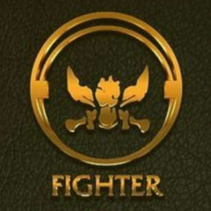
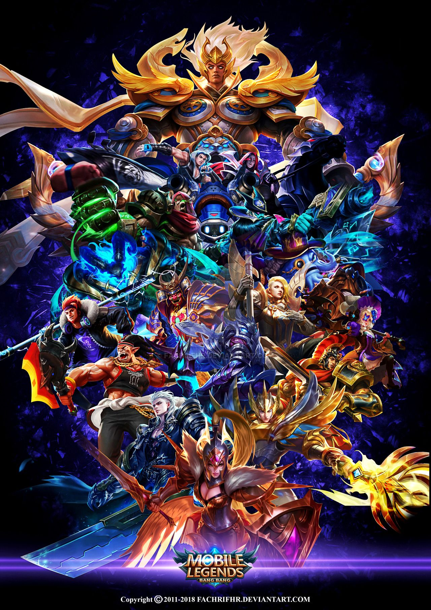

What are Fighters?

Fighters are usually described as those heroes that go to the experience lane and often help in teamfights to assist their allies in dealing more damage to the enemies. Another usual thing for these fighters to do is to split push as much as possible to keep the enemy team busy and to break the enemies' planned rotations. These are the things that we will be discussing in the next section of this pahe. For now, we will mainly focus on what fighters are and how we can classify them.
Fighters are close range combatants that possess a mix of offensive and defensive capabilities. A fighter's damage will add up over time to make it a major threat. Each fighter has a unique blend of mobility, damage, disruption and durability. Fighter is an intermediate melee heroes, between durability or damage, hence make fighter serve as multi purpose combatant, such as Semi Tank, Crowd Controller, or Burst Damage Dealer.
Just like any other roles, fighters can be classified by the role classifications. Some are purely fighters, while some have their Fighter role as their primary or secondary role.
Pure fighters include Balmond, Freya, Chou, Sun, Alpha, Lapu-Lapu, Argus, Jawhead, Martis, aldous, Leomord, Thamuz, Minsitthar, Badang, Guinevere, Terizla, X.Borg, Dyrroth, Silvanna, Yu Zhong, Khaleed, Pacquito, Phoveus, Aulus, and Yin. These heroes have no other ther roles besides their Fighter role.
Heroes with the primary Fighter role include Alucard, Bane, Zilong, Zilong, Ruby, Hilda, Roger, Kaja, Masha, and Julian. These heroes are primarily Tanks, but have an additional role due to the nature of their skill sets.
Heroes with the secondary Fighter role incude Gatotkaca, Barats, and Fredrinn. These heroes have another role that is more evident and used than their secondary Fighter role. These three all have one thing in common: they all have the Tank role as their primary role.
When we hear the term 'Fighters', we often assume that they would deal Physical damage to the enemies. However, there are also several fighters in Mobile Legends that deal Magic damage to the enemies. The Magic-damage fighters include Guinevere, Silvanna, Phoveus, X.Borg, Bane, and Julian.
Going on to our next section, let us talk about what these figters usually to during in-game matches.
What do Fighters do?

Fighters are often the durable type of heroes that still deal a considerable amount of damage to the enemies. Thus, they can be positioned in several roles which are the team's experience laner, roamer, or the jungler. These are roles that could be filled up by these fighters which we will be explaining next.
Usually, fighters are positioned in the experience lane because, unlike marksmen, they do not need the extra gold that comes from the gold lane. Though, they would need the extra experience from the experience lane so that they would be able to level up much faster and join the team fights whenever possible. The fighters tasked in the experience lane are often met by a opponent that they would have to dominate against or at least make a stalemate with. Dominating in the experience lane would mean that the team has the upper hand in that lane, which allows for an advantageous position for the turtle or lord fights. Thus, it is necessary for the fighters here to have crowd control skills, mobility skills, and enough durability that they can use against their opponent. The usual fighters tasked in this lane include almost every fighter in the game. This is because fighters, in nature, have the properties of a good experience laners that have been mentioned above. Though, just note that fighters are not the only ones suited for the experience lane. There are also certain tanks that are good enough to dominate the lane.
Next are the fighters that could play as their team's roamer. What roamers usually can offer with their skill sets are crowd control abilities that they can use to initiate a team fight, very high durability that they can use to tank the enemy damage, and/or having good mobility that will let them join team fights at any moment. These are qualities of roamers that almost every fighter can satisfy. However, these are the fighters that are notable in playing the roamer role for their team: Chou, Jawhead, Minsitthar, Pacquito, Ruby, Hilda, Kaja, Gatotkaca, and Fredrinn.
Almost all fighters are suited in the jungler role since junglers are usually defined to be heroes that stay in the jungle lane, equip the Retribution spell, and secure several neutral objectives such as the Turtle, Lord, and the other jungle creeps. However, it is usually preferred for these junglers to be the durable type while dealing adequate damage to the enemies. Thus, fighters will fit in this role because of how they could deal quite amount of damage while being tank-built. When these tank-built fighters play as the jungler, they could fill in the role of a front liner with Retribution, allowing for the presence of a Support roamer in the team instead of a Tank one. Some notable fighters in the jungle include Balmond, Sun, Aldous, Leomord, Thamuz, Aulus, Yin, Alucard, Roger, Julian, and Barats.
However, these roles are not meant to classify these fighters. This is because almost every fighter can be used to play all of these three roles which means that it is possible to use them as a "flex" pick during the drafting phase. These "flex" picks are meant to confuse the enemies as to which of the heroes would play as the jungler, roamer, and experience laner. This way, after the drafting phase, the team may pick the hero from their team that will play the three mentioned roles depending on the enemy team composition.
Some Special Abilities of Certain Fighters
Good Health Regeneration Abilities
Ruby's 'Let's Dance!' (Passive skill)
Ruby has 10% Physical Lifesteal of her own and inherits 115% Physical Lifesteal from Equipment. (Her Basic Attack enjoys no lifesteal effect.) After casting a skill, Ruby can dash to another place, gaining 9 (+1.8 x Hero Level) Physical Defense and Magic Defense for 4 seconds. This effect stacks up to 3 times and scales with level.
Alucard's 'Fission Wave' (Ultimate Skill)
Alucard absorbs the energy of enemies within the designated area, increasing his own Physical Lifesteal by 40%-60% and reducing Movement Speed of the targets by 40% for 4 seconds. In 8 seconds, Passive is triggered whenever he deals damage to the targets. During this period, he can release a powerful shock wave forward, dealing 400–700 (+200% Extra Physical Attack) Physical Damage to enemies.
Khaleed's 'Quicksand Guard' (Second Skill)
Khaleed protects himself with the power of quicksand, restoring 60 / 75 / 90 / 105 / 120 / 135 + 5% / 6% / 7% / 8% / 9% / 10% of his Lost HP and 10 Desert Power every 0.5 second, reducing damage taken by 50% / 54% / 58% / 62% / 66% / 70% for up to 4 seconds.
While channeling, quicksand appears under his feet, slowing enemies near him by 60%.
Hilda's 'Blessing of Wilderness' (Passive Skill)
Hilda regenerates 2% of her Max HP every second while staying in a bush. When entering a bush, Hilda gains a shield equal to 15% of her Max HP. After leaving the bush, the shield lasts for 5 seconds. This effect has a 10 seconds cooldown.
Fredrinn's 'Crystalline Armor' (Passive Skill)
Fredrinn stores 6% of the damage he receives as Crystal Energy. The Crystal Energy decays after 8s at a rate of 5% Max HP per second. Fredrinn can convert the stored Crystal Energy into HP by 30% of his damage dealt (15% for damage dealt to minions).
Fredrinn gains 1 Combo Point that lasts 6s each time his regular skill hits a non-minion enemy (up to 4 Combo Points). His Ultimate costs different numbers of Combo Points at different skill levels.
Silvanna's 'Imperial Justice' (Ultimate Skill)
Silvanna leaps toward an area, dealing 350-650 (+110% Total Magic Power) Magic Damage to enemies in the area of effect and slowing them down by 40% for 1.5 seconds. Meanwhile, Silvanna creates a Circle of Light, in which the enemy that is closest to the center will be restrained from escaping for the next 3.5 seconds.
If Silvanna is in the Circle of Light, she will get extra 100% Attack Speed and 80%-120% Magic Lifesteal.
Separate Dimension!!
Yin's 'My Turn' (Ultimate skill)
After a short delay, Yin pulls an enemy (excluding pets and clones) into his domain for up to 8 seconds and turns Lieh. When in the domain, the two cannot be affected by other heroes' skills. Lieh has stronger skills and 20-60 extra Physical Defense and Magic Defense. The domain will end early if any of the two hero is killed. If Lieh successfully kills the enemy, he'll restore 20% Max HP, leave the domain with the cooldowns of Frenzy Strike and Instant Blast reset, and continue to fight as Lieh for 8 seconds.
If Yin fails to pull his target into his domain, the skill will enter a 3s cooldown.
Three Lives?!?!?!?
Masha's 'Ancient Strength' (Passive skill)
Blessed by the Bear King, Masha has 3 HP bars and won't die until the last HP bar is depleted. She can also ignore an instance of damage each time she loses an HP bar. Masha gains 1.8% extra Attack Speed each time she loses 1% HP (calculated by the total HP of the 3 HP bars). Masha gains 25% extra Physical Lifesteal when she loses the first HP bar and 15% Physical Lifesteal and 60% Resilience when she loses the second. Masha restores 3 Energy each time she deals damage to an enemy hero or creep (1 when she deals damage to minions).
Dinosaur Eating the Enemies?!?!
Barats' 'Detona's Welcome' (Ultimate skill)
Detona locks onto an enemy hero, having a waiting period for the next 1.5 seconds before stunning the target and then suppressing the target when Detona devours the target for 1 second. While an enemy hero is devoured, Barats will be unable to move, but Barats will be immune to Crowd Control and able to change his direction.
Then Detona spits the target out 3.5 yards, dealing 120 / 160 / 200 (+70% Total Physical Attack) (+1.2% Max HP) Physical Damage to the target.
If the target is spit against into other enemy heroes or walls, the target and nearby enemy heroes will be dealt 150 / 175 / 200 / 225 / 250 (+80% Total Physical Attack) (+1.5% Max HP) Physical Damage and be stunned for 1 second.
Temporary Invincibility and Immortality
Argus' 'Eternal Evil' (Ultimate Skill)
Passive: Argus permanently gains 10-30 Physical Attack.
Active: Argus transforms into a fallen angel, removes all debuffs (excluding Suppression), and fully charges his blade. Also becomes immune to death [and slow effects,] and greatly increases the blade's charging speed for 4 seconds. After the duration ends, Argus gains HP by 100% of his damage dealt to enemy heroes within the duration and resets enemy turrets' damage increase against him.
Though there are more abilities of Fighter heroes worthy of being classified as unique and special, I am unable to cover them all in here. Hopefully, I would have some spare time in the future which would let me finish this work. Regardless, that is all about the fighters!!